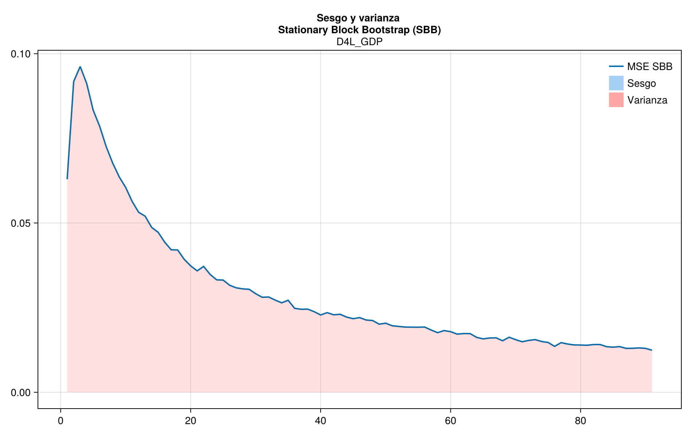
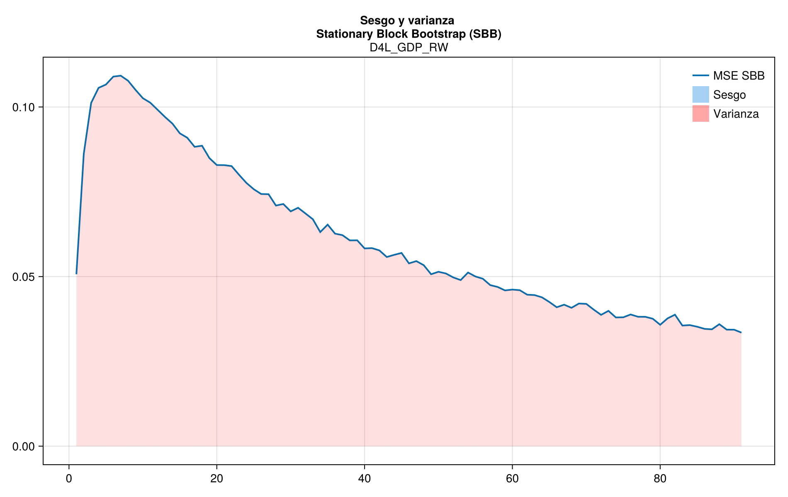

Mean Analysis
Means of Moving and Stationary Block Bootstrap
The first graph shows the estimator of the mean at each possible block size, the second shows the standard deviation of $B=10000$ bootstrap replications, and the last shows the MSE of the mean estimator.
Total domestic inflation (D4L_CPI)

Domestic core inflation (D4L_CPIXFE)
Import Prices (D4L_IPEI)

Exchange rate (GTQ/USD) (D4L_S)

Monetary base (D4L_MB)

PCE core inflation (D4LCPIRW)

Monetary policy rate (RS)

Effective Federal Funds Rate (RS_RW)

Domestic real GDP (D4L_GDP)

Real GDP of the US (D4LGDPRW)

Bias and variance of MSE of the mean estimator
Bias and variance decomposition for MSE of mean estimator.
Total domestic inflation bias and variance analysis

Domestic core inflation bias and variance analysis

Import Prices bias and variance analysis

Exchange rate bias and variance analysis

Monetary base bias and variance analysis
PCE core inflation bias and variance analysis

Monetary policy rate bias and variance analysis

Effective Federal Funds Rate bias and variance analysis
Domestic real GDP bias and variance analysis

Real GDP of the US bias and variance analysis
